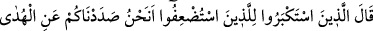

insanların çoğu bilmezler.
“Kâfir olanlar” yâni Kureyş kafirleri “dediler ki: “Biz hiçbir zaman” Muhammed’e
inmekte olan “bu Kur’an’a ve bundan önce gelen” Tevrat ve İncil gibi öldükten sonra
yeniden diriltilmeye delâlet eden Kur’an’dan önce indirilen eski “kitaplara
inanmayacağız.”
Keşfü’l-esrâr’da der ki: “Şeytan ülkesinin kullanımında olan göz bizi nasıl
tanıyabilir? Şeytanın tasarrufunda kirletilen bir gönül, Kur’ân’ın yücelik ve azametini
nereden bilebilir? Hakk’ın eman ve kerem ahdine sığınmış bir gönül gerekir ki bizim
risâlet ve nübüvvetimize ulaşabilsin. Kur’ân’ın izzet ve celâlinin onu kendisine
çekebilmesi için, ezel ikbalinin saf ve berraklığıyla yıkanmış bir şem’/mum gerekir.
Bizim mucize ve âyetlerimizi görüp anlamaya, küfrün oklarından kurtulmuş ve şehvet
uykusundan uyanmış bir göz gerekir.”
Ey genç! Sultana nedimlik yapacak cemale sahip olmayan,
Külhandakilerle dost olmasın da ne yapsın?
Meyhanede sürekli hizmetçilik yapıyorum ben.
Bu hâlde tekkeye nasıl uygun düşerim?
Her ne kadar kalender ve hilekâr olsam da,
Dert ümidiyle tohum saçıyorum ben.
Ey Muhammed veya hitaba lâyık olan kimse! “Sen o zâlimleri,” dirilişi inkâr
edenleri, -ki onlar ikrar yerine inkârı koymakla zulmetmişlerdir- “Rablerinin
huzurunda tutuklanmış,” muhasebe yerinde ayak parmakları üzere hapsedilmiş olarak
“birbirlerine söz atarlarken” karşılıklı atışırken, sataşırken, birbirlerine cevap
verirlerken “bir görsen!” Burada “__WORD__”in cevabı hazfedilmiştir. Yâni tasvir etmekten
ibârenin yetersiz kalacağı korkunç ve fena, zor ve çetin bir iş görmüş olurdun.
“Zayıf sayılanlar” ve ezilip başkalarına tâbi olanlar, zayıf ve zavallı sayılanlar,
“büyüklük taslayanlara:” Dünyada serkeşlik eden/tekebbür gösterenlere, Allah’a
ibadetten ve peygamberlerine indirdiği fermânını kabulden büyüklenip ululanmakta ileri
giden, azgınlık ve sapıklıkta zayıf sayılanların kendilerine tâbi olmasını isteyenlere:
“Siz olmasaydınız” yâni sizin bizi îmandan saptırıp alıkoymanız olmasaydı “elbette biz
inanan insanlar olurduk,” yâni siz bizi îmandan ve peygambere uymaktan menettiniz
“derler.”